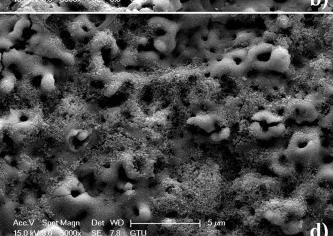

1. Running a simple example in Nature journal
After following the installation instructions, you can run an example using you own query to extract information from Nature journal.
Below you can find an example of the json query which is the input to the pipeline. Several example queries can be found under: /exsclaim/query
[ ]:
test_json = {
"name": "nature-nano",
"journal_family": "nature",
"maximum_scraped": 3,
"sortby": 'relevant',
"llm": "gpt-3.5-turbo",
"openai_API": YOUR_OPENAI_API_KEY ,
"query":
{ "search_field_1":
{ "term":"Ag nanoparticle",
"synonyms":["Ag nanoparticles", "silver nanoparticle", "silver nanoparticle", "nanoparticles of silver", "AgNPs", "AgNP", "Ag NPs", "silver NPs", "silver NP"] } },
"open": True,
"save_format": ["boxes", "save_subfigures" ],
"logging": ["print", "exsclaim.log"]
}
Run exsclaim 2.0 to scrap data from Nature. Once the run is completed successfully a SUCCESS message will be printed. Inside the exsclaim directory the generated documents can be located into the /exsclaim/output/{name}
[ ]:
from exsclaim.pipeline import Pipeline
test_pipeline = Pipeline(test_json)
results = test_pipeline.run()
@@@@@@@@@@@@@@@@@@@@@@@@@@@@@@@@@@@@@@@@@@@@@@@@@@@@
@@@@@@@@@@@@@@@@@@@& /&@@@( /@@@@@@@@@@@@@@@@@@@
@@@@@@@@@@@@@@@ %@@@@@@@@@@@@@@@@@@@ *@@@@@@@@@@@@@@
@@@@@@@@@@@@ @@@@@@@@@@@@@@, .@@@@@@@@ *@@@@@@@@@@@
@@@@@@@@@.#@@@@@@@@@@@@@@@@, @@@@@@@@@@ @@@@@@@@@
@@@@@@@&,@@@@@@@@@@@@@@@@@@. @@@@@@@@@@@@ @@@@@@@
@@@@@@ @@@@@@@@@@@@@@@@@@@@ @@@@@@@@@@@@@ @@@@@@
@@@@@ @@@@@@@@@@@@@@@@@@@@@ *@@@@@@@@@@@@@@/@@@@@
@@@@ @@@@@@@@@@@@@@@@@@@@@@ @@@@@@@@@@@@@@@@,@@@@
@@@ @@@@@@@@@@@@@@@@@@@@@@& @@@@@@@@@@@@@@@@@ @@@
@@@,@@@@@@@@@@@@@@@@@@@@@@* (@@@@@@@@@@@@@@@@@@%@@
@@.@@@@@@@@@@@@@@@@@@@@@@@ @@@@@@@@@@@@@@@@@@@ @@
@@ @@@@@@@@@@@@@@@@@@@@@@@ @@@@@@@@@@@@@@@@@@@ @@
@@ @@@@@@@@@@@@@@@@@@@@@@/ &@@@@@@@@@@@@@@@@@@@ @@
@@,@@@@@@@@@@@@@@@@@@@@@@ @@@@@@@@@@@@@@@@@@@@ @@
@@@.@@@@@@@@@@@@@@@@@@@@& @@@@@@@@@@@@@@@@@@@@@%@@
@@@ @@@@@@@@@@@@@@@@@@@@@ /@@@@@@@@@@@@@@@@@@@@ @@@
@@@@ @@@@@@@@@@@@@@@@@@@@@@@@@@@@@@@@@@@@@@@@@@,@@@@
@@@@@ @@@@@@@@@@@@@@@@@@@@@@@@@@@@@@@@@@@@@@@@*@@@@@
@@@@@@ @@@@@@@@@@@@@@@@@@@@@@@@@@@@@@@@@@@@@@ @@@@@@
@@@@@@@@ @@@@@@@@@@@@ @@@@@@@@@@@@@@@@@@@ @@@@@@@
@@@@@@@@@.(@@@@@@@@@@ @@@@@@@@@@@@@@@@ @@@@@@@@@
@@@@@@@@@@@@ @@@@@@@@@# #@@@@@@@@@@@@ /@@@@@@@@@@@
@@@@@@@@@@@@@@@ ,@@@@@@@@@@@@@@@@@@@ &@@@@@@@@@@@@@@
@@@@@@@@@@@@@@@@@@@@ ,%@@&/ (@@@@@@@@@@@@@@@@@@@
@@@@@@@@@@@@@@@@@@@@@@@@@@@@@@@@@@@@@@@@@@@@@@@@@@@@
/usr/local/lib/python3.10/dist-packages/torchvision/models/_utils.py:208: UserWarning: The parameter 'pretrained' is deprecated since 0.13 and may be removed in the future, please use 'weights' instead.
warnings.warn(
/usr/local/lib/python3.10/dist-packages/torchvision/models/_utils.py:223: UserWarning: Arguments other than a weight enum or `None` for 'weights' are deprecated since 0.13 and may be removed in the future. The current behavior is equivalent to passing `weights=FasterRCNN_ResNet50_FPN_Weights.COCO_V1`. You can also use `weights=FasterRCNN_ResNet50_FPN_Weights.DEFAULT` to get the most up-to-date weights.
warnings.warn(msg)
Downloading: "https://download.pytorch.org/models/fasterrcnn_resnet50_fpn_coco-258fb6c6.pth" to /root/.cache/torch/hub/checkpoints/fasterrcnn_resnet50_fpn_coco-258fb6c6.pth
100%|██████████| 160M/160M [00:00<00:00, 300MB/s]
Running Journal Scraper
>>> Time Elapsed: 60.48 sec (3 articles)
Running Caption Distributor
>>> Time Elapsed: 16.57 sec (19 captions)
Running Figure Separator
>>> Time Elapsed: 105.91 sec (19 figures)
Matching Image Objects to Caption Text
>>> SUCCESS!
Printing Master Image Objects to: /content/exsclaim/output/nature-nano/images
>>> SUCCESS!
Here is a visuallization of the first extracted image
[ ]:
import cv2
import os
import random
import matplotlib.pyplot as plt
folder_path = '/content/exsclaim/output/nature-nano/figures/'
png_files = [f for f in os.listdir(folder_path ) if f.endswith('.jpg')]
image = random.choice(png_files)
img = cv2.imread(os.path.join(folder_path , image))
img_rgb = cv2.cvtColor(img, cv2.COLOR_BGR2RGB)
plt.imshow(img_rgb)
plt.axis('off')
plt.show()

We can also see the extracted subfigures
[ ]:
def plot_subfigure(label):
dir_path = f"output/html-ECPs//images/{image.split('.')[0]}/{label}/"
files = os.listdir(dir_path)
image_files = [f for f in files if f.startswith(f"{image.split('.')[0]}_{label}") and f.endswith('.png')][0]
img = cv2.imread(os.path.join(dir_path, image_files))
img_rgb = cv2.cvtColor(img, cv2.COLOR_BGR2RGB)
plt.imshow(img_rgb)
plt.axis('off')
return plt.show()
plot_subfigure('b')

The generated dataset with the image captions and the image information can be show below
[ ]:
from exsclaim.visualize_dataset import *
from itables import init_notebook_mode
init_notebook_mode(all_interactive=True)
df = read_jsons('exsclaim/output/nature-nano/exsclaim.json')
display(df)
| name | title | article_url | article_name | image_url | figure_name | license | open | full_caption | caption_delimiter | figure_path | master_images | unassigned |
|---|---|---|---|---|---|---|---|---|---|---|---|---|
| Loading... (need help?) |